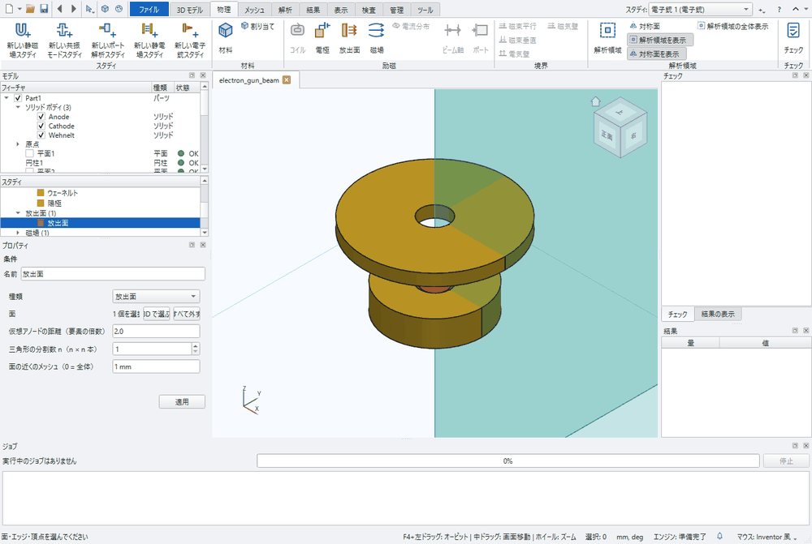
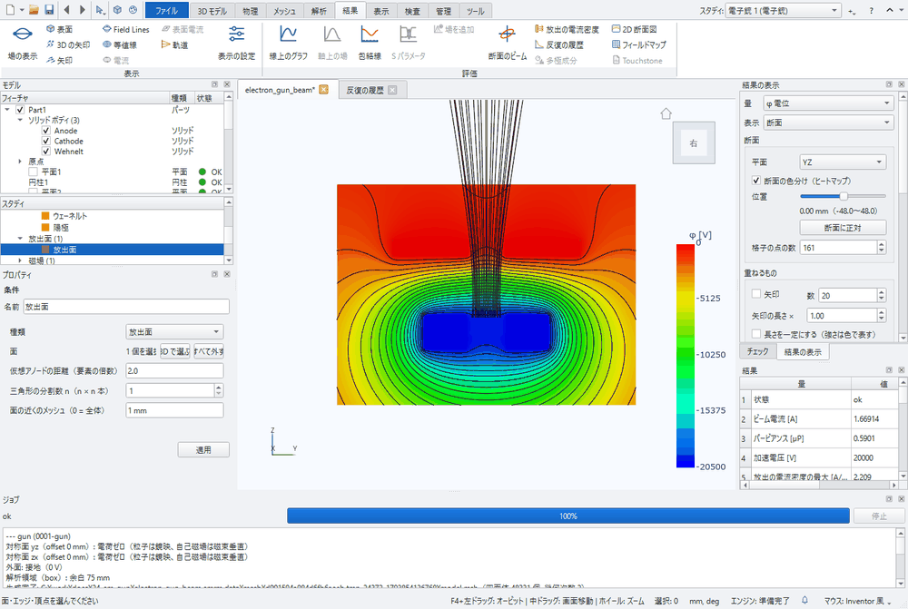
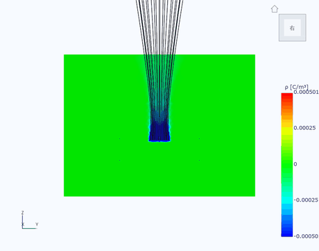
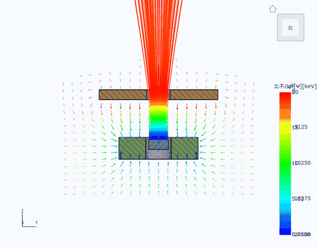
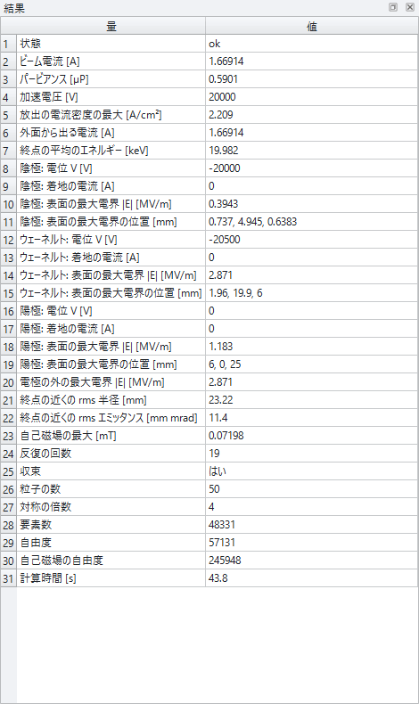
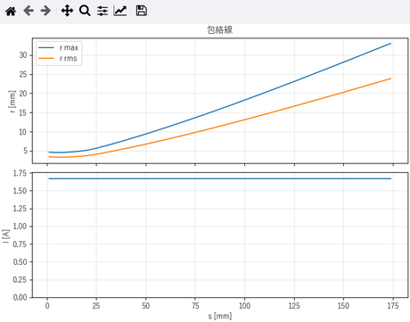
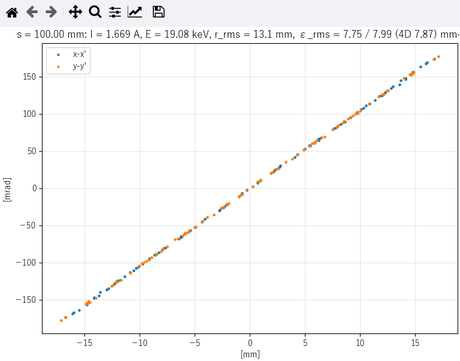
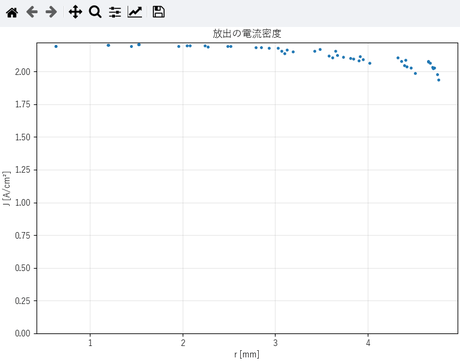
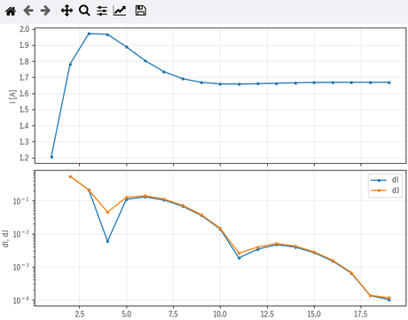

第 24 章
電子銃解析
電子銃 この章では、電子銃のスタディを説明します。熱陰極から出る空間電荷制限のビームを、ビーム自身の電場と磁場とともに解き、ビーム電流・パービアンス・軌道・包絡線・エミッタンスを求めます。
24.1 電子銃のスタディ
静電場のスタディ（第 23 章）に、放出面と磁場を足したものです。電極・誘電体・解析領域・対称面・メッシュの作り方は静電場と同じです。計算は次の順に進み、電流が変わらなくなるまで 3〜6 を繰り返します。
- 磁場外部磁場をメッシュの節点へ写す（無くてもよい）
- 電位空間電荷なしの電位を解く
- 放出陰極の面の前の電位から電流を決める
- 軌道電場と磁場の中で電子を追う
- 電荷と電流軌道から空間電荷と電流を積む
- 更新電位と自己磁場を解き直す
リボンの［物理］タブ → ［スタディ］パネル → ［新しい電子銃スタディ］で作ります。静電場のスタディを右クリックして［電子銃のスタディとして複製］を選ぶと、電極・領域・対称面・メッシュを写して作れます。
スタディのブラウザのフォルダは、材料・領域・電極・放出面・磁場・解析領域・対称・メッシュ・解析の設定・結果です。
電極は静電場と同じです（第 23 章）。コイルと鉄は電子銃のスタディでは解析から除き（第 16 章）、磁場は静磁場のスタディで解きます。


24.2 放出面
放出面は、電子が出る陰極の面です。面の電流は、面の前方（仮想アノード）の電位から Child-Langmuir 則で決まります（空間電荷制限）。
陰極のボディを電極にします（［電極］）。
3D ビューで放出する面を選びます（Ctrl で複数）。
リボンの［物理］タブ → ［励磁］パネル → ［放出面］をクリックします。選んだ面の放出面ができ、プロパティ パネルにフォームが出ます。
必要なら欄を変えて、［適用］を押します。
| 欄 | 内容 | 目安 |
|---|---|---|
| ［仮想アノードの距離（要素の倍数）］ | 電位を読む点の、面からの距離（面の三角形の大きさの倍数） | 既定の 2 のままで使います |
| ［三角形の分割数 n（n × n 本）］ | 面の 1 つの三角形から出す粒子の本数 | 1。断面の図や統計の点を増やすときに 2〜3 |
| ［面の近くのメッシュ（0 = 全体）］ | 放出面の近くの要素の大きさ。面から離れると全体の大きさへ大きくなります | 陰極の半径の 1/5 以下 |
放出面の電位は、面のボディの電極の電位です。電極の上に無い面は、解析がエラーになります。
面が曲がっていれば、電流は面の曲率で補正されます（電子が広がる凸の面で増え、集まる凹の面で減ります）。
陰極の放出しない面（側面など）には、放出面を付けません。陰極とウェーネルトが同じ電位でも、放出面にした面だけから電子が出ます。
面の前の電位が陰極より低い所からは、電子は出ません。ウェーネルトを負にしていくと、放出する範囲が狭くなります。
24.3 粒子の終わり方
| 当たる所 | 扱い | 結果の表 |
|---|---|---|
| 電極（ボディ・面） | 着地して止まる | 電極ごとの［着地の電流］ |
| 誘電体 | 当たって止まる（帯電は考えません） | ［誘電体に当たる電流］ |
| それ以外の外面 | 出ていく | ［外面から出る電流］ |
| 対称面 | 鏡で反射する（鏡像の粒子が入ってくるのと同じ） | — |
24.4 対称面
電子銃の対称面は、電荷ゼロの面だけです。接地の面は、鏡像の電極が逆の電位になり、鏡像の電子と辻褄が合わないので使えません。
軌道が面について鏡像になるには、面の上で磁場が面に垂直でなければなりません。ソレノイドの磁場は軸を含む面に沿うので、ソレノイドを使うときは対称面で切れません。電子が磁場で回転するためです。解析の開始のときに面の上の磁場を確かめ、面に沿っていればエラーで止めます。このときは対称面を消して全体で解きます。
24.5 磁場
ビームにかける外部磁場は、リボンの［物理］タブ → ［励磁］パネル → ［磁場］で選びます。外部磁場はビームの影響を受けないとして、最初に一度だけメッシュの節点へ写します。
| 出典 | 内容 |
|---|---|
| ［なし］ | 外部磁場なし（既定） |
| ［静磁場のスタディ］ | 同じ文書の静磁場のスタディの最新の結果。座標は同じです。［倍率］で磁場を定数倍できます（鉄が飽和するときは、電流を変えて解き直します） |
| ［軸上の磁場（表）］ | 軸の上の磁場の表から、2 次の近軸の展開で軸のまわりの磁場を作ります。［軸］と軸の点を選び、表には 1 行に位置 [mm] と B [T] を書きます |
選んだ静磁場のスタディに結果が無ければ、［実行］が先に静磁場を解いてから、電子銃を解きます。
結果があるときは、その最新の結果をそのまま使います。コイルの電流などを変えたら、静磁場のスタディを解き直してください。
電子銃のメッシュの節点のうち、静磁場の解析領域の外の節点の磁場は 0 になります（ログに出ます）。
24.6 空間電荷と自己磁場
ビームの電荷は電位を押し下げ（空間電荷）、ビームの電流は磁場をつくります（自己磁場）。どちらもリボンの［解析］タブ → ［設定］パネル → ［解析の設定］で切り替えられます。
| 欄 | 内容 |
|---|---|
| ［外面の境界］ | 静電場と同じ（電荷ゼロ / 接地） |
| ［空間電荷］ | 切ると、空間電荷なしの電場で軌道を 1 回だけ追います（電流は空間電荷なしの値で、大きく出ます。形の確認用） |
| ［ビームの自己磁場］ | 2 次（既定）・1 次（軽い）・なし。電子銃のメッシュで解きます。メモリは 2 次が多く使います（精度の目安） |
| ［緩和係数］ | 反復で新しい値に置き換える割合。発散しそうなら自動で半分にします。放出面の近くの要素が小さいほど小さな値が要ります（目安: 0.5 mm で 0.4、0.25 mm で 0.2、0.1 mm で 0.1） |
| ［反復の上限］・［収束の判定（電流）］ | 放出の電流の変化がこの値より小さく、電荷密度の変化が 1 % より小さい状態が 3 回続いたら止めます。放出の電流が落ち着いても、ビームの通り道（出口の電流など）はしばらく動くからです |
| ［時間刻みの係数］・［粒子ごとの歩数の上限］ | 軌道の追跡の設定。ふつうは変えません |
自己磁場の磁気力は、空間電荷の電気の反発力の β² 倍です（β は電子の速さと光速の比。20 kV で 0.07、250 kV で 0.55）。低い電圧では切っても結果はほとんど変わりません。
ビームの電流の閉じ方
磁場を解くには、電流が閉じていなければなりません。ビームの電流は次のように閉じます。
外面から出る電流: そのまま外面を通り抜け、戻りの電流は外面を流れます（導体の管の中のビームと同じ）。自己磁場の外面の境界は磁束平行です。
陰極と、電極に着地した電流: 電極のボディの中を導体として流れ、外面へ抜けます。陰極の給電の棒をボディにして外面まで伸ばせば、実際の電流の路になります。
導体で外面につながっていない電極: 電流は真空を通って閉じます。この電極の近くの自己磁場は弱くなります（陰極のすぐ前で半分ほど）。電流の 5 % より多く真空を通ると、解析の後に注意を出します。外面につながった電極でも、放出面のメッシュが粗いと（粒子の出発点が面から離れるので）この注意が出ることがあります。
24.7 メッシュ
放出の電流は、陰極の面の前の電位で決まるので、放出面の近くのメッシュがいちばん効きます。［面の近くのメッシュ（0 = 全体）］で細かくし、全体は粗くします。
ビームの通る所の要素が粗いと、空間電荷の分布が粗くなります。ビームのまわりに空気のボディを作ってメッシュの大きさを決めると、そこだけ細かくできます。
メッシュを細かくして電流が変わらなくなることを確かめてください。面の近くの大きさを半分にすると、反復の［緩和係数］も小さくします。
24.8 結果
解析の間は、中央に［反復の履歴］のタブが開き、電流と残差のグラフが反復ごとに伸びます。解析が終わると、結果の表と断面が出ます。


軌道の表示
軌道は、断面・表面・3D の矢印のどの表示にも重なります。リボンの［結果］タブ → ［表示］パネル → ［軌道］か、［結果の表示］パネルで変えます。
［断面の近くだけ］（既定）: 断面の表示では、出発点が断面の近くの軌道だけを描きます。切ると全部を描きます。
［色］: 一色・エネルギー・電流・着地先の電極。断面の色分けを切ると、軌道の色の凡例が出ます。
［本数の上限］: 描く軌道の本数の上限（対称面の鏡像も数えます）。




［結果の表示］の［量］には、静電場の量（φ・|E|・成分・|D|・εr）のほかに、ρ 空間電荷密度、|B| 外部磁場、|B| ビームの自己磁場があります。
結果の表


| 行 | 内容 |
|---|---|
| ［ビーム電流］ | 放出の全電流 |
| ［パービアンス [µP]］ | ビーム電流 / V3/2。V は［加速電圧 [V]］（最も高い電極と陰極の電位の差） |
| ［放出の電流密度の最大 [A/cm²]］ | 陰極の面の電流密度の最大 |
| ［外面から出る電流］・［着地の電流］ | どこへ行ったか。合計はビーム電流です |
| ［終点の平均のエネルギー [keV]］ | 粒子の終点の運動エネルギーの電流の重みの平均 |
| ［表面の最大電界 |E| [MV/m]］（電極ごと） | 空間電荷を含む電場の、電極の表面の最大 |
| ［終点の近くの rms 半径 [mm]］・［終点の近くの rms エミッタンス [mm mrad]］ | 軌道の終点の近くの断面の値 |
| ［反復の回数］・［収束］ | 収束しなければ、電流は確かではありません |
グラフ








どれも［結果］タブの［評価］パネルのコマンドです（リボンの［結果］タブ → ［評価］パネル → ［包絡線］・リボンの［結果］タブ → ［評価］パネル → ［断面のビーム］・リボンの［結果］タブ → ［評価］パネル → ［放出の電流密度］・リボンの［結果］タブ → ［評価］パネル → ［反復の履歴］）。
ビームの軸は、放出の電流の重心を通り、放出の平均の法線の向きです（対称面があれば対称面の上）。
エミッタンスはトレース空間の rms（x-x'・y-y'）です。電子の熱速度は入っていません。磁場の中ではビームの回転の分を含みます（断面のビームの題の「4D」は回転の分を含まない値です）。メッシュの雑音の分があるので、小さな値の比較にはメッシュを細かくします。
φ・E の断面、線上のグラフ、フィールドマップの書き出しは、静電場と同じです（第 23 章）。
24.9 例題
例題 examples/electron_gun_beam.emrm は、φ10 mm の陰極、ウェーネルト、φ12 mm の穴のある陽極の電子銃です。
| 陰極 | φ10 × 5 mm（z = 0〜5 mm）、−20 kV。上面（z = 5 mm）が放出面 |
|---|---|
| ウェーネルト | 外径 40・内径 13 mm（z = −5〜6 mm）、−20.5 kV |
| 陽極 | φ60 × 5 mm（z = 25〜30 mm）、穴 φ12 mm、0 V |
| モデル | 1/4（YZ・ZX の電荷ゼロの対称面）。外面は接地。全体のメッシュ 2 mm、放出面の近く 1 mm |
例題を開いてリボンの［解析］タブ → ［実行］パネル → ［実行］を押します（約 1 分。自己磁場の行列の組み立てが半分ほどです）。
結果の表で、ビーム電流が約 1.67 A、パービアンスが約 0.59 µP、全部の電流が陽極の穴を抜けることを確かめます。
［包絡線］で包絡線を見ます。陽極の穴（負のレンズ）の後でビームは広がります。
24.10 精度の目安
| 問題 | 基準 | 結果 |
|---|---|---|
| 平板ダイオード（10 mm、10 kV） | Child-Langmuir 則の電流 | 要素 0.25〜2 mm で ±0.5 % |
| 球面ダイオード（半径 10・25 mm、5 kV、1/8 モデル） | Langmuir-Blodgett の電流 | 凸の陰極 −1.0 %（要素 1.2 mm）・0.0 %（0.8 mm）、凹の陰極 −0.5 % |
| DGUN の例（球面の陰極、−250 kV、1/4 モデル、磁場なし） | DGUN の電流 55.30 A | 要素 0.7〜1.5 mm で −0.2〜+0.6 %（要素 1.2〜3.3 万） |
| 同じ例（全体、ソレノイドの軸上の磁場と自己磁場、5.5 万要素） | DGUN の電流・包絡線 | 電流 −0.4 %、包絡線の差の中央値 1.8 %、ウェスト 3.91 mm（DGUN 3.93 mm） |
| TGUN の例（平板の陰極、10 kV、ソレノイド 1000 A·turn を静磁場で解く） | TGUN の結果（電流 1.83 A、出口の半径 平均 0.65・最大 0.93 mm） | 電流 1.79 A、平均 0.69 mm、最大 0.93 mm |
| アンペールの法則（電流の閉じ方） | 通り抜け・給電の棒・着地で ∮B·dl = μ0I | 0.04 % 以内 |
電流の誤差は放出面の近くのメッシュで決まります。自己磁場の 1 次は 2 次の 1/8 のメモリで解けますが、ビームの中の磁場の誤差は 3 % ほどです（ビームの縁で 13 %）。
24.11 今の版でできないこと
温度制限の放出（放出は空間電荷制限だけです）
電子の熱速度（熱エミッタンス）、二次電子、反射した電子の扱い
誘電体の帯電（当たった電子は消えるだけです）
自己磁場の鉄の影響（自己磁場は μr = 1 で解きます。外部磁場の鉄は静磁場のスタディで扱えます）
回転対称の周期のモデル（ソレノイドのときは全体で解きます）